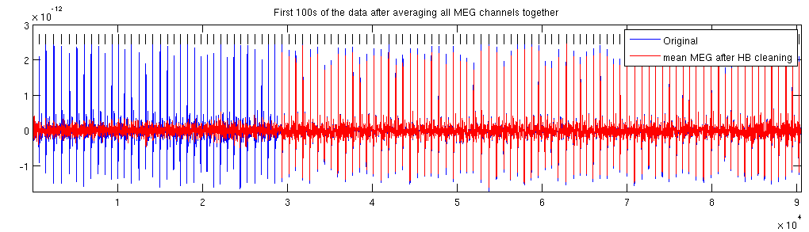
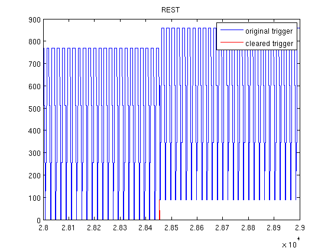
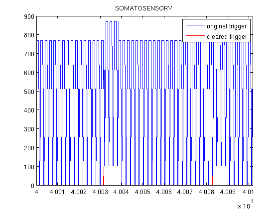
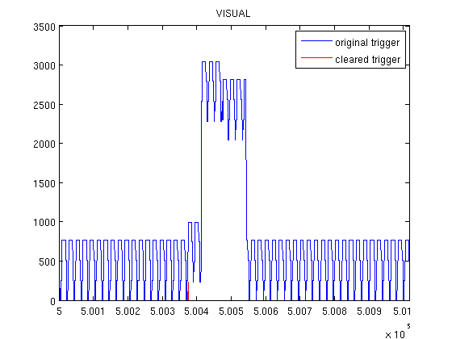
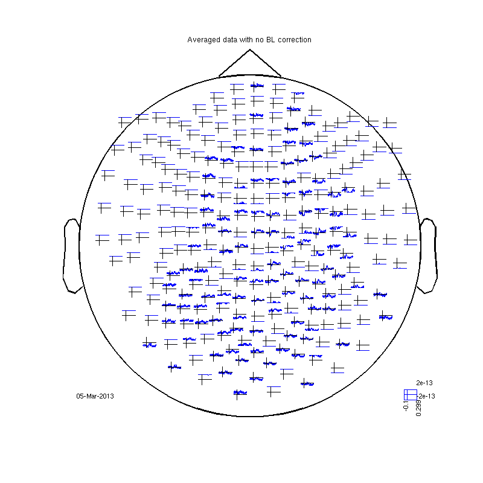
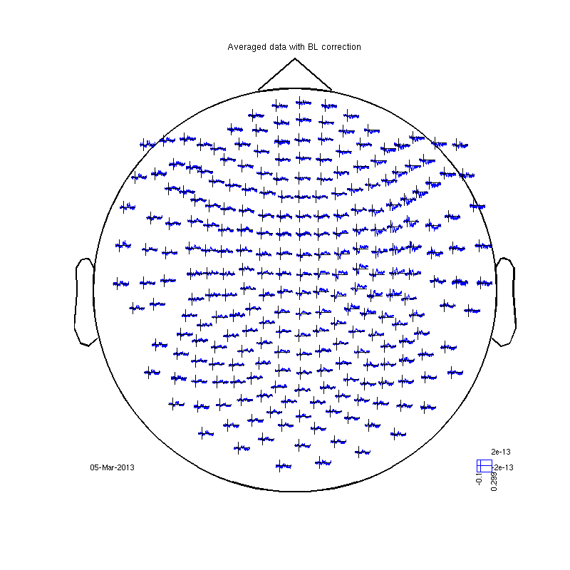

cleanMEG repository, createCleanFile function.
The function can clean different artifacts. It can clean the the heartbeat but sometimes fails. It can clean the electricity artifact without filter, allowing measurment of 50Hz brain activity. We have markers on the trigger channel for the 50Hz sycles recorded from the wall, trigger value 256. It can clean building vibrations by our accelerometer channels X4 X5 and X6 It can do some agressive cleaning in the frequency domain (byFFT option) The first example cleans only a part of the data (30s) to save time. The second example
Contents
cleaning 30 seconds
cd somsens % cleaning the directory before starting if exist('tryCleanOP.mat','file') !rm tryCleanOP.mat end if exist('hb,lf_c,rfhp0.1Hz','file') !rm hb,lf_c,rfhp0.1Hz end % cleaning fileName = 'c,rfhp0.1Hz'; p=pdf4D(fileName); cleanCoefs = createCleanFile(p, fileName,'byLF',256,'HeartBeat',[],'CleanPartOnly',[0 30]); title('First 100s of the data after averaging all MEG channels together')
Warning: MATLAB:MEGanalysis: Not Testing big steps Starting the MEG file and adjusting parameters samples : 1 - 30517 NOT searching for large step like artifacts finding LF for: 0 30 cleaning LF for the piece 0 30 Finding heart beat for the piece 0 30 cleaning HB for the piece 0 30
Cleaning the whole data
This is a more standard example. this takes time.
% cleanCoefs = createCleanFile(p, fileName,... % 'byLF',256 ,'Method','Adaptive',... % 'xClean',[4,5,6],... % 'byFFT',0,... % 'HeartBeat',[],... % 'maskTrigBits', 512);
The trigger channel
The trigger channel is a digital channel recorded simultaneously with the MEG. It has information about 50Hz cycles but also about the onset of visual stimuli (value 2048) and the timing of events (trials) of different sorts like left and right somatosensory stimulation. The first thing to happen in this data is 2 minutes rest with eyes open and two minutes eyes closed. These are marked by the trigger values 90 and 92. The 50Hz is recorded twice here which makes the trigger channel rise in 256 and 512 every 20ms (and often both up to 768).
% first read the trigger channel trig=readTrig_BIU('c,rfhp0.1Hz'); % now we are getting rid of the 50Hz markers by making a clear trigger % chanel - trigCl. trigCl=clearTrig(trig); xlim([28000 29000]) legend ('original trigger','cleared trigger') title('REST') % first lets see what different trigger values exist. unique(trigCl) % 90 - the first rest, 92 - second rest. 102 - right index finger. 104 - % left index finger. 222 230 240 and 250 are different visual stimuli. 50, % 52 and 54 are in the end of the experiment, they are, they, I forgot what they are. % now look at one second of the somatosensory experiment. trigCl=clearTrig(trig); xlim([400000 401017]); legend ('original trigger','cleared trigger') title('SOMATOSENSORY') % now one visual trial trigCl=clearTrig(trig); xlim([500000 501017]) legend ('original trigger','cleared trigger') title('VISUAL')
Warning: 50Hz cleaning with cleanMEG pack will not be possible using the new trigger
ans =
0 50 52 54 90 92 102 104 106 108 222 230 240 250
Warning: 50Hz cleaning with cleanMEG pack will not be possible using the new trigger
Warning: 50Hz cleaning with cleanMEG pack will not be possible using the new trigger
   read raw data
Trigger value 104 marks left index finger stimulation. We use a trial function called BIUtrialfun to tell fieldtrip how to read our trigger channel while ignoring 256, consider visual trigger and so on. We read 0.3s after the finger press and 0.1s before. ft_definetrial only checks the trigger channel. ft_preprocessing actually reads the data. here no real preprocessing is done, no baseline correction or filters applied.
fileName='c,rfhp0.1Hz'; cfg=[]; cfg.dataset=fileName; cfg.trialdef.eventtype='TRIGGER'; cfg.trialdef.prestim=0.1; cfg.trialdef.poststim=0.3; cfg.trialdef.offset=-0.1; cfg.trialfun='BIUtrialfun'; cfg.trialdef.eventvalue= 104; %left index finger cfg1=ft_definetrial(cfg); cfg1.feedback='no'; raw=ft_preprocessing(cfg1); % averaging cfg=[]; cfg.feedback='no'; rawAvg=ft_timelockanalysis(cfg,raw); %plotting cfg4.layout='4D248.lay'; cfg4.interactive='yes'; cfg4.ylim=[-2e-13 2e-13]; fig1=figure; set(fig1,'Position',[0,0,800,800]) ft_multiplotER(cfg4,rawAvg); title ('Averaged data with no BL correction') % some channels are off the image leaving a streight line over or below. % even 'OK' channels are sometimes all below or above zero.
evaluating trialfunction 'BIUtrialfun'
reading header...
applying digital weights in the gradiometer balancing matrix
undoing the Supine balancing
reading events from file...
applying digital weights in the gradiometer balancing matrix
undoing the Supine balancing
found 894 events
created 100 trials
the call to "ft_definetrial" took 3 seconds and an estimated 0 MB
applying digital weights in the gradiometer balancing matrix
undoing the Supine balancing
processing channel { 'TRIGGER' 'RESPONSE' 'MLzA' 'MLyA' 'MLzaA' 'MLyaA' 'MLxA' 'A22' 'MLxaA' 'A2' 'MRzA' 'MRxA' 'MRzaA' 'MRxaA' 'MRyA' 'MCzA' 'MRyaA' 'MCzaA' 'MCyA' 'GzxA' 'MCyaA' 'A104' 'A241' 'MCxA' 'A138' 'MCxaA' 'A214' 'A71' 'A26' 'A93' 'A39' 'A125' 'A20' 'A65' 'A9' 'A8' 'A95' 'A114' 'A175' 'A16' 'A228' 'A35' 'A191' 'A37' 'A170' 'A207' 'A112' 'A224' 'A82' 'A238' 'A202' 'A220' 'A28' 'A239' 'A13' 'A165' 'A204' 'A233' 'A98' 'A25' 'A70' 'A72' 'A11' 'A47' 'A160' 'A64' 'A3' 'A177' 'A63' 'A155' 'A10' 'A127' 'A67' 'A115' 'A247' 'A174' 'A194' 'A5' 'A242' 'A176' 'A78' 'A168' 'A31' 'A223' 'A245' 'A219' 'A12' 'A186' 'A105' 'A222' 'A76' 'A50' 'A188' 'A231' 'A45' 'A180' 'A99' 'A234' 'A215' 'A235' 'A181' 'A38' 'A230' 'A91' 'A212' 'A24' 'A66' 'A42' 'A96' 'A57' 'A86' 'A56' 'A116' 'A151' 'A141' 'A120' 'A189' 'A80' 'A210' 'A143' 'A113' 'A27' 'A137' 'A135' 'A167' 'A75' 'A240' 'A206' 'A107' 'A130' 'A100' 'A43' 'A200' 'A102' 'A132' 'A183' 'A199' 'A122' 'A19' 'A62' 'A21' 'A229' 'A84' 'A213' 'A55' 'A32' 'A85' 'A146' 'A58' 'A60' 'GyyA' 'A88' 'A79' 'GzyA' 'GxxA' 'A169' 'A54' 'GyxA' 'A203' 'A145' 'A103' 'A163' 'A139' 'A49' 'A166' 'A156' 'A128' 'A68' 'A159' 'A236' 'A161' 'A121' 'A4' 'A61' 'A6' 'A126' 'A14' 'A94' 'A15' 'A193' 'A150' 'A227' 'A59' 'A36' 'A225' 'A195' 'A30' 'A109' 'A172' 'A108' 'A81' 'A171' 'A218' 'A173' 'A201' 'A74' 'A29' 'A164' 'A205' 'A232' 'A69' 'A157' 'A97' 'A217' 'A101' 'A124' 'A40' 'A123' 'A153' 'A178' 'A1' 'A179' 'A33' 'A147' 'A117' 'A148' 'A87' 'A89' 'A243' 'A119' 'A52' 'A142' 'A211' 'A190' 'A53' 'A192' 'A73' 'A226' 'A136' 'A184' 'A51' 'A237' 'A77' 'A129' 'A131' 'A198' 'A197' 'A182' 'A46' 'A92' 'A41' 'A90' 'A7' 'A23' 'A83' 'A154' 'A34' 'A17' 'A18' 'A248' 'A149' 'A118' 'A208' 'A152' 'A140' 'A144' 'A209' 'A110' 'A111' 'A244' 'A185' 'A246' 'A162' 'A106' 'A187' 'A48' 'A221' 'A196' 'A133' 'A158' 'A44' 'A134' 'A216' 'UACurrent' 'X1' 'X3' 'X5' 'X2' 'X4' 'X6' }
the call to "ft_preprocessing" took 2 seconds and an estimated 0 MB
the input is raw data with 280 channels and 100 trials
the call to "ft_timelockanalysis" took 0 seconds and an estimated 0 MB
selection avg along dimension 1
selection dof along dimension 1
selection var along dimension 1
reading layout from file 4D248.lay
the call to "ft_prepare_layout" took 0 seconds and an estimated 0 MB
the call to "ft_multiplotER" took 1 seconds and an estimated 0 MB
 read data with baseline correction
cfg1.demean='yes';% old version was: cfg1.blc='yes'; cfg1.baselinewindow=[-0.1,0]; blc=ft_preprocessing(cfg1); % averaging blcAvg=ft_timelockanalysis(cfg,blc); % now make an interactive multiplot and look for the evoked response fig2=figure; set(fig2,'Position',[0,0,800,800]) ft_multiplotER(cfg4,blcAvg); title ('Averaged data with BL correction') % click and drag to choose channels
applying digital weights in the gradiometer balancing matrix
undoing the Supine balancing
processing channel { 'TRIGGER' 'RESPONSE' 'MLzA' 'MLyA' 'MLzaA' 'MLyaA' 'MLxA' 'A22' 'MLxaA' 'A2' 'MRzA' 'MRxA' 'MRzaA' 'MRxaA' 'MRyA' 'MCzA' 'MRyaA' 'MCzaA' 'MCyA' 'GzxA' 'MCyaA' 'A104' 'A241' 'MCxA' 'A138' 'MCxaA' 'A214' 'A71' 'A26' 'A93' 'A39' 'A125' 'A20' 'A65' 'A9' 'A8' 'A95' 'A114' 'A175' 'A16' 'A228' 'A35' 'A191' 'A37' 'A170' 'A207' 'A112' 'A224' 'A82' 'A238' 'A202' 'A220' 'A28' 'A239' 'A13' 'A165' 'A204' 'A233' 'A98' 'A25' 'A70' 'A72' 'A11' 'A47' 'A160' 'A64' 'A3' 'A177' 'A63' 'A155' 'A10' 'A127' 'A67' 'A115' 'A247' 'A174' 'A194' 'A5' 'A242' 'A176' 'A78' 'A168' 'A31' 'A223' 'A245' 'A219' 'A12' 'A186' 'A105' 'A222' 'A76' 'A50' 'A188' 'A231' 'A45' 'A180' 'A99' 'A234' 'A215' 'A235' 'A181' 'A38' 'A230' 'A91' 'A212' 'A24' 'A66' 'A42' 'A96' 'A57' 'A86' 'A56' 'A116' 'A151' 'A141' 'A120' 'A189' 'A80' 'A210' 'A143' 'A113' 'A27' 'A137' 'A135' 'A167' 'A75' 'A240' 'A206' 'A107' 'A130' 'A100' 'A43' 'A200' 'A102' 'A132' 'A183' 'A199' 'A122' 'A19' 'A62' 'A21' 'A229' 'A84' 'A213' 'A55' 'A32' 'A85' 'A146' 'A58' 'A60' 'GyyA' 'A88' 'A79' 'GzyA' 'GxxA' 'A169' 'A54' 'GyxA' 'A203' 'A145' 'A103' 'A163' 'A139' 'A49' 'A166' 'A156' 'A128' 'A68' 'A159' 'A236' 'A161' 'A121' 'A4' 'A61' 'A6' 'A126' 'A14' 'A94' 'A15' 'A193' 'A150' 'A227' 'A59' 'A36' 'A225' 'A195' 'A30' 'A109' 'A172' 'A108' 'A81' 'A171' 'A218' 'A173' 'A201' 'A74' 'A29' 'A164' 'A205' 'A232' 'A69' 'A157' 'A97' 'A217' 'A101' 'A124' 'A40' 'A123' 'A153' 'A178' 'A1' 'A179' 'A33' 'A147' 'A117' 'A148' 'A87' 'A89' 'A243' 'A119' 'A52' 'A142' 'A211' 'A190' 'A53' 'A192' 'A73' 'A226' 'A136' 'A184' 'A51' 'A237' 'A77' 'A129' 'A131' 'A198' 'A197' 'A182' 'A46' 'A92' 'A41' 'A90' 'A7' 'A23' 'A83' 'A154' 'A34' 'A17' 'A18' 'A248' 'A149' 'A118' 'A208' 'A152' 'A140' 'A144' 'A209' 'A110' 'A111' 'A244' 'A185' 'A246' 'A162' 'A106' 'A187' 'A48' 'A221' 'A196' 'A133' 'A158' 'A44' 'A134' 'A216' 'UACurrent' 'X1' 'X3' 'X5' 'X2' 'X4' 'X6' }
the call to "ft_preprocessing" took 2 seconds and an estimated 0 MB
the input is raw data with 280 channels and 100 trials
the call to "ft_timelockanalysis" took 0 seconds and an estimated 0 MB
selection avg along dimension 1
selection dof along dimension 1
selection var along dimension 1
reading layout from file 4D248.lay
the call to "ft_prepare_layout" took 0 seconds and an estimated 0 MB
the call to "ft_multiplotER" took 1 seconds and an estimated 0 MB
